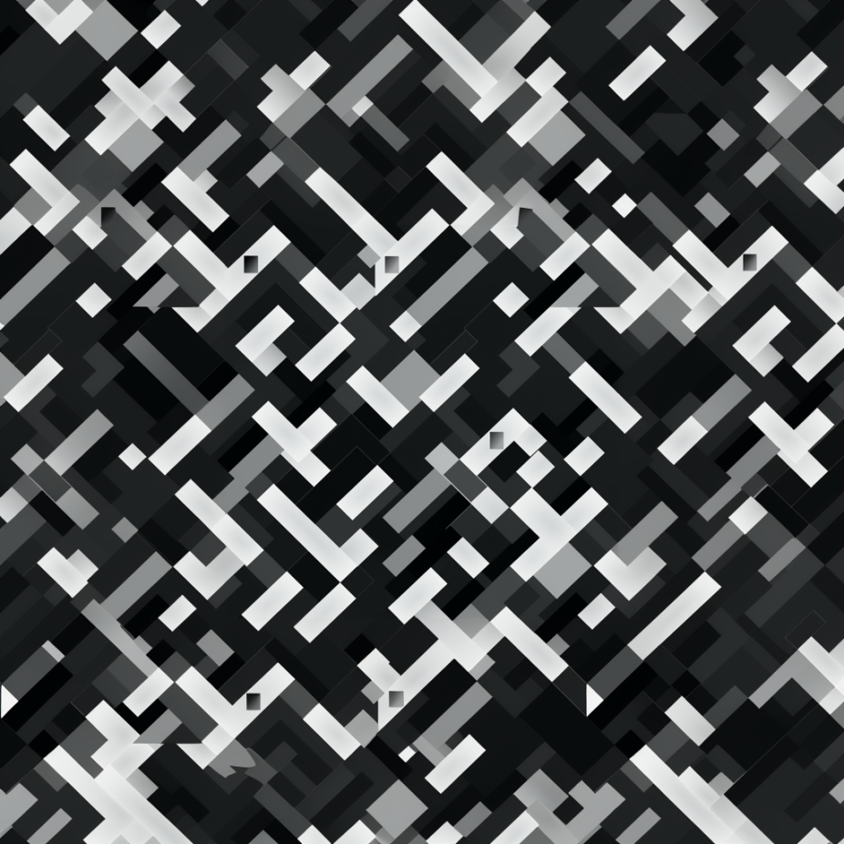
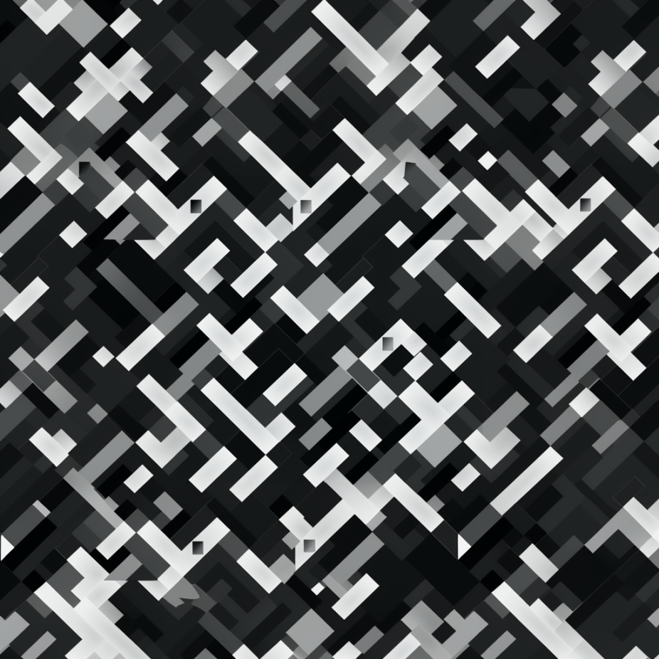

Louvre Abu Dhabi
While at Ateliers Jean Nouvel, I worked on the typographic signage and icon design for the Louvre Abu Dhabi museum. Under the the creative direction of Philippe Apeloig and Clovis Vallois, I sketched, designed and mocked up several physical designs for the typographic system in French, English and Arabic.
 
